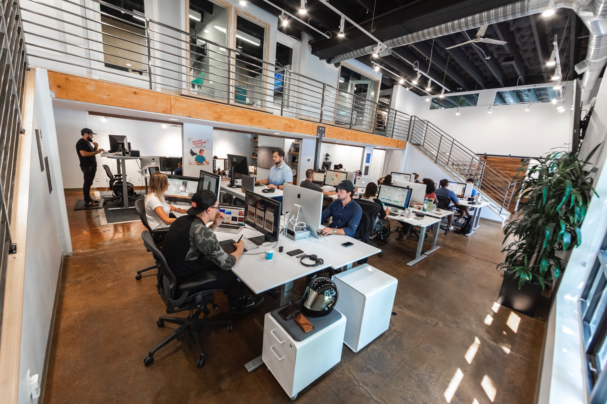

Stefan Vladimirov
Chief Creative at Swipes. Loves order and beauty. Always striving to achieve the
balance between function
and aesthetics.
Product Designer
Short intro
Hi, my name is Jeff (bonus points if you get the movie reference). I live in Utah, USA where I spend my time designing, enjoying nature with my family, and playing sports.
What do you do for a living?
I’m a digital Product Designer for Underbelly, a design/dev agency in Salt Lake City. I’m in a unique position at Underbelly where I get to create an app that I came up with. So on top of UI/UX design I also get to design a brand, do illustration, lead customer experience, & implement a marketing plan.

When did you find your passion for design?
In 2006 I landed my first real job out of high school. I was a Marketing Director for a local real estate brokerage. I got to create ads as part of that role which is where I taught myself to use Photoshop and Illustrator and really fell in love with graphic design. Fast forward to 2011, I’m 2 years into a business degree program and one day I realized I don’t love business at all. So I switched majors and decided to study Graphic Design. It was there that I found I was passionate about designing digital experiences. My peers were all doing print design while I was designing apps.
How long have you been doing design?
I’ve been doing graphic design since 2006. I’ve been a Product Designer since 2014 when I started my first agency job.

Describe the beginning of your day
First thing I do after mashing the off button on my alarm is review my schedule/tasks for the day. I’ll then get ready and prepare a healthy breakfast I can take with my on my commute (about a 45 min drive). I always say goodbye to my wife and kids before I leave. On my commute I’m always listening to a podcast or audio book. About 50% of the time I’ll listen to something design related and the other 50% of the time I’ll listen to something a little lighter to give my brain a rest.
What’s your workspace?
I work for an agency and we often switch around desks. So my own personal workspace is nothing special, but our office is a great space that lends itself to creativity. You can find me if you look closely.
What’s your source of inspiration?
INature is my go-to when I need to get inspired and get a renewed sense of creativity and passion for design. There’s something about nature that has always spoken to me. I also find a lot of inspiring work on Dribbble. It’s an easy place to find and share work. There’s a lot of talented designers on there that help me elevate my craft.
What works are you most proud of?
I was heavily involved in redesigning the Vivint.SmartHome family of apps. At the time they had over 1 million active users, so our designs were affecting many people. It’s been about 3 years since I worked there, but the app has remained basically the same since then. You can learn more about the project here: https://www.dabsterdesign.com/vivint-smarthome
I mentioned before that I’m currently designing my own app at Underbelly. It’s called Proxy. The app automatically books real estate showings for Realtors, saving them time and money. We are about to launch some really cool features I’m very proud of, but I’m most proud that our team designed, validated, built, and shipped the MVP in a very short time. You can learn about the process here: https://underbelly.is/making-it-awesome-with/proxy
What are the tools you use in your day to day life?
Sketch, Principle, Invision, Calendar, & Slack are my daily tools. I occasionally use PS, AI, XD, & AE but it’s rare.
Do you follow any set of principles for your work?
I’m a firm believer in Dieter Rams’ 10 principles for good design. I try to follow them all honestly. There is one rule I’ve recently become very passionate about that doesn’t exactly show up on Dieter’s list, though. Good design is accessible. I’m passionate about creating experiences that everyone can enjoy.

What’s your favourite movie?
Since having kids, we don’t get out to see a lot of movies. So pretty much all of the movies I see are on Netflix. The most recent one I liked was Bird Box. An old classic favorite of mine is The Longest Yard with Adam Sandler.
What's your favourite book?
Shoe Dog. I’m a huge Nike fan. Also, Inspired (tech product version) is a great book for Product Designers.
What advice would you give to people that start out with design?
I would recommend first becoming familiar with the tools. Get a copy of Sketch & Principle (both are pretty affordable compared to other tools) and start watching tutorials and actually performing the tasks in the tutorials. I’d also recommend Daily UI. They give you easy daily UI design tasks and by the end you’ve basically designed every UI component you can think of. I’d recommend doing Daily UI and keeping with the same theme. For example, if you want to work for a lifestyle brand one day, perform each task as if for a lifestyle brand and by the end you will have a great piece for your portfolio. If I were to do it again, I would probably not get a degree. I’d recommend a more affordable and fast-tracked program like a UX bootcamp. You will be able to learn the basics needed to create your portfolio. Your portfolio will be key in landing your first job, not a degree.
Have you ever thought of empowering your creative community in any way, shape or form?
Of course. I hope to use Underbelly’s platform to help the creative community in the future. In fact, we have a company goal to use design for good this year and we are starting to explore ways in which we can do that.
Meet Jeff on Social Media
Dribbble Instagram TwitterThank you for the interview, Jeff. Your advice for people that just start out with design are absolute gold! üëÅ